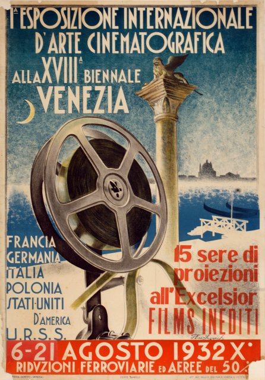
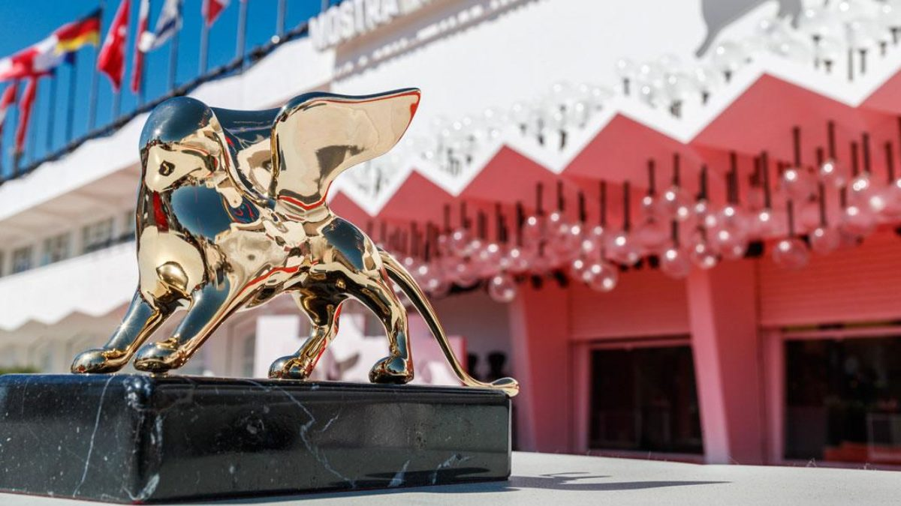
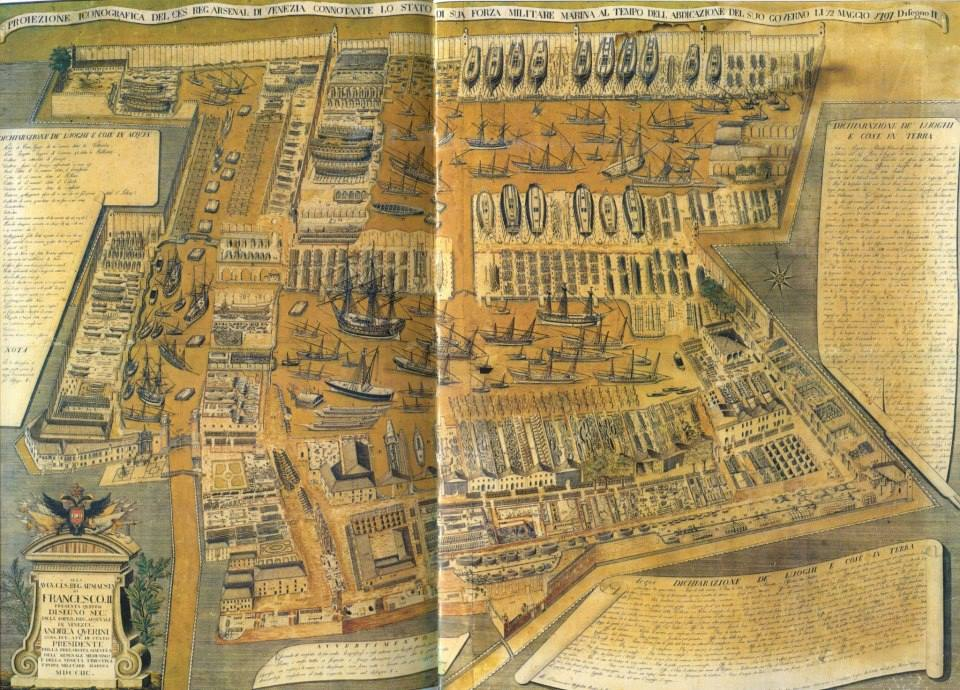
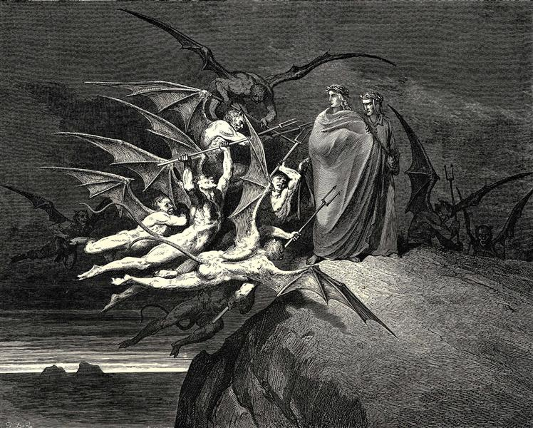

FESTIVAL DEL CINEMA
La Mostra Internazionale d’Arte Cinematografica è una manifestazione organizzata ogni anno dal 1932 dalla Biennale dell’Arte di Venezia e che trova come sede principale il Palazzo del Cinema al Lido. Nel circuito dei festival del cinema, quello della Serenissima è il più antico, nonché uno dei più prestigiosi. Da sempre, il suo scopo è quello di favorire la diffusione e la conoscenza del cinema internazionale nelle sue forme di arte, spettacolo ed industria.


Nel corso della rassegna vengono presentati al pubblico principalmente nuove pellicole, cortometraggi e (dal 2017) progetti immersivi in realtà aumentata ma è anche possibile assistere ad omaggi o retrospettive (rassegne di film già usciti) dedicati a personaggi di rilievo nel settore. Le sezioni proposte dalla Mostra sono otto. Tra le più importanti:
- Selezione ufficiale (nel quale vengono consegnati il Leone d’Oro, il Leone d’Argento per la Regia e la Coppa Volpi per la miglior interpretazione)
- Selezione Orizzonti
- Fuori Concorso
- Venezia Classici
L'ARSENALE DI VENEZIA
L’Arsenale è una struttura adibita alla costruzione e riparazione di navi e all'immagazzinamento di armi. La parola "arsenale" deriva dall'arabo ”Dār al-ṣināʿa”, ovvero "sede d'industria" o "casa del mestiere". Sorto nel XII secolo, l'Arsenale di Venezia si è sviluppato fino a diventare la maggiore fabbrica navale del mondo.
Quest’ultimo viene citato da Dante nel XXI canto dell’Inferno, in quanto egli visitò Venezia nel 1321 come ambasciatore di Guido Novello da Polenta, signore di Ravenna. Dopo la morte del poeta, i veneziani gli dedicarono una statua e 3 case (Inferno, Purgatorio e Paradiso) assegnate ai custodi. La “caxa del Paradiso” venne distrutta durante la 2ª occupazione austriaca
“Quale ne l’arzanà de’ Viniziani
bolle l’inverno la tenace pece
a rimpalmare i legni lor non sani,
ché navicar non ponno - in quella vece
chi fa suo legno novo e chi ristoppa
le coste a quel che più viaggi fece;
chi ribatte da proda e chi da poppa;
altri fa remi e altri volge sarte;
chi terzeruolo e artimon rintoppa -;
tal, non per foco, ma per divin’arte,
bollia là giuso una pegola spessa,
che ’nviscava la ripa d’ogne parte.”
All’inizio del canto ci troviamo nell’8º cerchio nella 5ª bolgia dove vengono puniti i barattieri, ovvero coloro che hanno approfittato della loro posizione politica per trarne illeciti guadagni. Il loro contrappasso (per analogia) consiste nell’essere invischiati nella pece bollente come in vita si sono inguaiati nella corruzione ingannando.
L’atmosfera cupa e la pece nera ricordano a Dante l’Arsenale di Venezia, dove i marinai sono in continuo movimento nel riparare le navi. Qui i due poeti incontrano i Malebranche, orribili demoni guidati da Malacoda che in volo trasporta un peccatore sulle spalle.
Mentre Dante si nasconde dietro una pietra, Virgilio affronta i diavoli chiedendo di parlare con Malacoda, il quale ordina ai compagni di non fargli male. Uscito dal nascondiglio, Dante si ricongiunge alla sua guida. Il capo dei diavoli quindi ricorda loro che il ponte tra la 5ª e la 6ª bolgia è crollato e propone loro un’altra strada. Malacoda inoltre offre loro la scorta dei diavoli che, tramite volgari segnali, danno inizio all’inganno.

